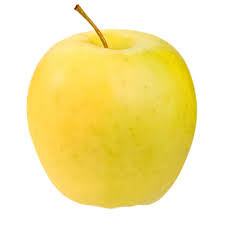
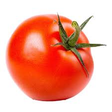
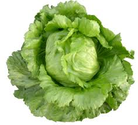

¿Cuál es la etiqueta principal utilizada para crear una tabla en HTML?
La etiqueta principal que se utiliza para crear una tabla es "table"
¿Qué etiqueta se utiliza para definir una fila en una tabla?
La etiqueta que se utiliza para definir un fila es "tr"
¿Cuál es la etiqueta utilizada para crear una celda de encabezado en una tabla?
La etiqueta que se utiliza para crear una celda de encabezado es "th"
¿Cuál es la etiqueta utilizada para crear una celda de datos en una tabla?
La etiqueta utilizada para crear una celda de datos en una tabla es "td"
¿Qué atributo se utiliza para especificar cuántas columnas debe abarcar una celda?
El atributo que se utiliza para especificar cuantas columnas debe abarcar una celda es "colspan"
¿Qué atributo se utiliza para especificar cuántas filas debe abarcar una celda?
El atributo que se utiliza para especificar cuantas filas debe abarcar una celda es "rowspan"
Si necesitamos crear una tabla con 10 filas ¿qué etiqueta y cuántas veces se debe utilizar para definir las filas?
Para crear una tabla con 10 filas vamos a utilizar la etiqueta "tr" y se debe definir 10 veces
TABLA 1 Realizar una tabla que contenga 5 alimentos y por cada uno de ellos se debe visualizar: nombre, calorías, tipo (fruta, verdura, lácteos, etc), imagen.
| Nombre | Calorias | tipo | imagen |
|---|---|---|---|
| manzana | 52 | fruta |  |
| Tomate | 18 | fruta |  |
| Lechuga | 15 | Verdura |  |
| Mandarina | 53 | Fruta | |
| Manteca | 902 | Lacteo |
TABLA 2
| pos. | numero | piloto | marca | vueltas | tiempo | diferencia |
|---|---|---|---|---|---|---|
| 1º | 231 | Urcera, José Manuel | 25 | 39:28.539 | ||
| 2º | 121 | Craparo, Elio | 25 | 39:29.740 | 1.201 | |
| 3º | 4 | Castellano, Jonatan | 25 | 39:31.206 | 2.677 | |
| 4º | 96 | Benvenuti, Juan Cruz | 25 | 39:33.118 | 4.579 | |
| 5º | 10 | Aguirre, Valentín | 25 | 39:33.764 | 5.225 | |
| 6º | 19 | Ciantini, Diego | 25 | 39:37.838 | 9.299 |